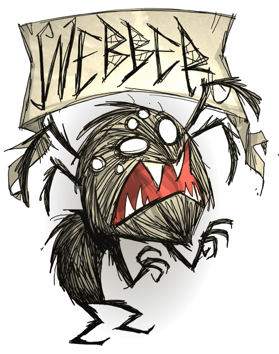

175 100 175
他的理智值比其他角色来得低，但是健康值和饥饿值较高。由于牠貌似蜘蛛的外表，蜘蛛并不会主动攻击牠；然而对蜘蛛有敌意的怪物们也会因此攻击牠。
想要解锁韦伯，玩家们必须找到由打倒蜘蛛掉落的蜘蛛头骨(一定机率掉落)，然后把头骨埋在挖过的坟里。之后，闪电会击中坟墓。韦伯会从坟墓中升起，成为可玩的角色。接着，无数蜘蛛会从坟墓里出现，不过玩家们不需要将牠们杀光也可以解锁韦伯。
Webber能够生长出「蜘蛛丝的胡子」，就像Wilson的普通胡子一样。这种胡须生长比Wilson的速度更快，每个阶段需要3天的时间去生长，总共9天就可以产生完整长度，(相较于需要16天的Wilson)。牠可以使用剃刀来刮去他的胡子获得蜘蛛丝。蜘蛛丝的胡子可以提供3/4的保暖效果，但是到了夏季Webber的胡子会造成中暑效果。Webber食用怪兽肉排并不会造成精神值与健康值的减少，并且在游戏一开始牠就会拥有2个怪兽肉和一个蜘蛛卵来使用。蜘蛛(包含蜘蛛女王)对Webber来说是不会产生敌意的。即使走在蜘蛛网上并不会惊扰蜘蛛巢穴内部产生警戒，也不会降低Webber的速度。他甚至可以制造属于自己的巢穴(需要12蜘蛛丝、6蜘蛛腺体、6纸莎草)，还可以使用蜘蛛丝提升自己巢穴等级。此外，把肉类给予其他蜘蛛将会使他们跟随Webber一整天，并攻击其他对Webber有害的敌人。由于能够与蜘蛛产生同盟关系，Webber并不会因为任何蜘蛛而降低精神值，甚至是蜘蛛女王。Webber的蜘蛛人特质虽然能够跟蜘蛛保持友好，但是对于与蜘蛛有敌意的生物(猪人 、兔人等)将会主动攻击Webber，不过并不会影响到保持中立的生物如蜜蜂、牛和石虾。
韦伯的蜘蛛特性使他十分适合探索洞穴地图，因为那里的蜘蛛比兔人（Bunnymen）还要来得多。蜘蛛吃肉或者猪皮会使数个蜘蛛跟随你一段距离。因此喂几只蜘蛛一些容易得手的肉（如蛙腿、兔肉），韦伯就可以拥有数量庞大的跟随者。建议玩家们将怪兽肉煮熟后再吃，以延长食物保鲜的时间。原因是熟怪兽肉保鲜度超过生怪兽肉的两倍。